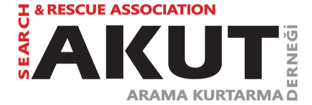

AKUT
AKUT Arama Kurtarma Derneği, 1996 yılında Türkiye'de kurulan, kâr amacı gütmeyen bir kuruluştur. Tamamen gönüllülerden oluşan dernek, doğal afet ve kazalarda arama kurtarma operasyonları yürütmektedir.
AKUT uzman gönüllüler yetiştirmekte; ilk yardım, dağ kurtarma, su kurtarma ve kentsel arama konularında eğitimler vermektedir. Tüm faaliyetler gönüllülük esasıyla yürütülmektedir.
AKUT'un Türkiye'de 2.500'den fazla aktif gönüllü üyesi vardır.
akut.org.tr
Katkıda bulunanlar
Güvendeyim, AKUT adına gönüllülerin, farklı uzmanlıkların ve kurumsal destekçilerin katkılarıyla gelişmektedir.
Projenin ilk fikrini, dönemin AKUT Bilgi Teknolojileri Birim Sorumlusu Özgür Çelik ortaya koydu. AKUT üyesi Bahri Meriç Canlı, Genel Bilgi Teknolojileri döneminde proje koordinasyonunu üstlendi; daha sonra ana geliştirici oldu ve bugün de uygulamanın geliştirilmesini ve bakımını sürdürmektedir.
Aralık 2019’da Android ve iOS kullanıcılarıyla buluşan Güvendeyim, yıllar içinde yeni cihazlara ve dillere genişledi. AKUT’un proje koordinasyonu, yazılım, içerik ve tanıtım katkıları bugün de devam etmektedir.
Yazılım geliştirme
Emre Olgun, Genel Bilgi Teknolojileri adına ilk Android ve iOS uygulamalarını geliştirdi; sonraki özelliklere ve 2021’de Huawei platform desteğine katkı sundu. Bahri Meriç Canlı, ana geliştirici olarak uygulamaları, ortak dil altyapısını, buluşma noktalarını ve web projelerini geliştirmektedir.
Görsel tasarım
Emrullah YIGIN, AKUT Tasarım Birimi adına Güvendeyim’in logosu dahil tüm görsel ihtiyaçlarını karşıladı.
İçerik ve tanıtım
AKUT Seminer Birimi uygulamanın içeriklerini sağlamaktadır. AKUT Kurumsal İletişim Birimi tanıtım çalışmalarını yürütmektedir.
Kurumsal destek
Güvendeyim’in farklı dönemlerinde Genel Bilgi Teknolojileri, Huawei Türkiye ve Amazon AWS projeye destek verdi.
Genel Bilgi Teknolojileri
İlk uygulamaların geliştirilmesine destek verdi. Bu dönemde Bahri Meriç Canlı proje koordinasyonunu yürütürken Emre Olgun şirket adına Android ve iOS geliştirmelerini gerçekleştirdi.
Huawei Türkiye
Güvendeyim’in AppGallery’de yer almasına ve dönemin Huawei akıllı saatlerine entegre edilmesine destek verdi. Sabrina Cara, Huawei Türkiye adına 2021’de saat entegrasyonu, GT3 uyumluluğu, konum ve SMS geliştirmelerine katkı sundu. Watch GT2 Pro ve Watch GT3 desteği 2022’de duyuruldu.
Huawei’nin duyurusu →Amazon AWS ve Sufle’nin katkısı
Amazon AWS, 6 Şubat 2023 depremlerinin ardından uygulamanın artan kullanımını karşılamasına ve internet üzerinden SMS gönderimine destek verdi. Bu kapsamda Sufle teknik katkı sundu; Gizem Gür, Sufle adına Android ve iOS SMS entegrasyonunu gerçekleştirdi. Bu destek, projenin o dönemdeki çalışmalarının bir parçasıdır.
Amazon’un açıklaması →Teşekkürler
Güvendeyim’in 2019’da başlayan yolculuğunda görev yapan AKUT Yönetim Kurulu başkanları Recep Şalcı, Zeynep Yosun Akverdi, Barış Altan Doğan ve Serhat Akbel, projeye kişisel olarak da destek verdiler. Kendilerine ve Güvendeyim’e emek veren tüm gönüllülere teşekkür ederiz.
Buluşma noktası önerilerinin açık coğrafi verilerini sağlayan OpenStreetMap katkıcılarına da teşekkür ederiz.
Gizlilik
Uygulama üyelik istemez. Kişileriniz, mesajınız ve buluşma noktalarınız telefonunuzda saklanır.
Gizlilik politikası →Açık veri
Buluşma noktası önerileri OpenStreetMap verisinden üretilmekte ve açık lisansla yayınlanmaktadır.
Kaynak ve veri →